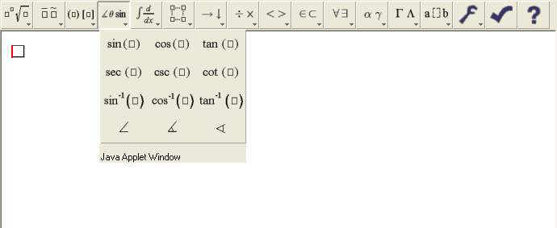
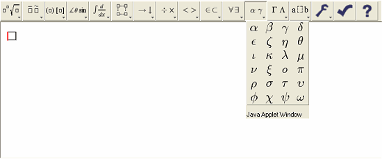
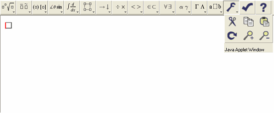

The toolbar is used to insert equation templates and symbols. It is also has icons for common operations like "cut" and "paste".
The standard toolbar contains three main panels. The left side of the tool bar consists of pop-up palettes displaying a variety of equation templates. Templates are highlighted as you mouse over them. To insert a template, click or release the mouse over a highlighted template.

The middle section of the standard toolbar consists of pop-up palettes containing symbol characters. As with the equation template palettes, you can insert a symbol by mousing over to highlight, and then releasing or clicking the mouse.

The right side of the toolbar is a 'toolbox' of blue colored icons for useful editor operations such as 'cut', 'copy','paste' and 'undo' icons. There are also buttons for shrinking and magnifying the current equation, and a 'check syntax' icon. Syntax checking is important for generating content MathML markup. See the WebEQ Developers Suite documentation for details.
